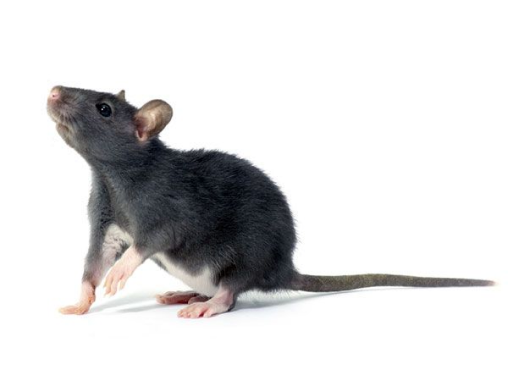
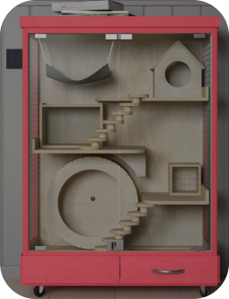
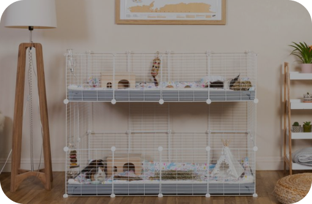
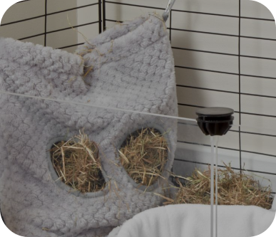
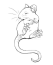

Крысы являются очень чистоплотными животными, но все же
требуют определенного ухода.
Регулярно чистите клетку и заменяйте подстилку
Обеспечьте крысам достаточно места для игр и движения
Старайтесь не переносить крыс из места в место, так как это может вызвать стресс
Регулярно осматривайте своих крыс на предмет болезней или травм
Особенности содержания домашних крыс
В первую очередь важно помнить, несмотря на свои скромные размеры, декоративная
крыса — такое же домашнее животное, как собака или кошка, она требует внимания,
любви и заботы. Так как крыса — это прежде всего грызун, выпуская ее на прогулку
по дому, помните, что она будет искать, что бы ей можно погрызть. Не позволяйте
крысе гулять без вашего присмотра, шнуры и провода прячьте и убирайте повыше.
Важной особенностью крыс является специфический запах. Домашние крысы метят
территорию своего проживания. Так что, если вы услышали, что крысы не имеют
запаха и абсолютно гиппоаллергенны, не принимайте это утверждение на веру.
Как и другие грызуны, декоративные крысы очень не любят сквозняков и боятся
прямых солнечных лучшей. Помните об этом, выбирая место для клетки. Оптимальной
температурой для содержания домашней крысы считается 18-21°

Выбор и обустройство клетки для домашних крыс
Домашний питомец должен жить комфортно, поэтому никаких банок, ящиков и
контейнеров. Просторная клетка — лучшее решение для выбора места проживания
декоративной крысы. В такой клетке вашему грызуну будет комфортно, а вы сможете
с удовольствием наблюдать за его поведением и повадками.
Клетка может быть уже оборудована лесенками и домиком, или вы можете приобрести
дополнительные аксессуары позднее. Чтобы вашему питомцу не было скучно,
установите в клетке разноярусные полочки, колес



Наполнитель для клетки
В качестве наполнителя лучше всего подходят опилки.
Будьте внимательны! Не выбирайте мелкие опилки. Подобный наполнитель при
попадании питомцу в глаза и нос может вызвать аллергическую реакцию. Как
альтернативу для наполнителя клетки можно рассматривать и бумагу. Но только не
газеты! Никакой типографской краски. Самый неподходящий вариант для наполнителя
— вата.
Проводите уборку клетки своего питомца каждую неделю. Обязательно проводите
полную дезинфекцию клетки. Это позволит вам избежать заражения питомца
различными паразитами, микробами и бактериями.
Чем кормить декоративную крысу?

Лакомства
Молочка
Белок
Овощи и фрукты
Основа - корм
Первый и самый важный пункт в правильном питании домашней крысы — это наличие
чистой и свежей воды в клетке. Установите вашему питомцу поилку. Это нехитрое
приспособление позволит домашней крысе своевременно получать свежую воду, при
этом не разводя в клетке сырость и грязь. Ежедневно обновляйте воду!
Как и у любого грызуна в рационе домашней крысы должны быть зерновые. Овес,
пшеница, ячмень, просо — все это крысы едят с большим удовольствием. Можно
баловать питомца свежими фруктами и овощами, листьями одуванчика и подорожника.
Орехи очень полезны крысам для стачивания зубов, подойдут для этой цели и
куриные косточки. Однако мясо в рационе домашней крысы должно быть в крайне
небольших количествах, не чаще 1 раза в неделю. Кормить взрослых декоративных
крыс необходимо два раза в день, маленьких крысят и подростков — до 4 раз в
день. Для того, чтобы обеспечить питомца необходимым кальцием, позаботьтесь,
чтобы в клетке домашней крысы находился минеральный камень.